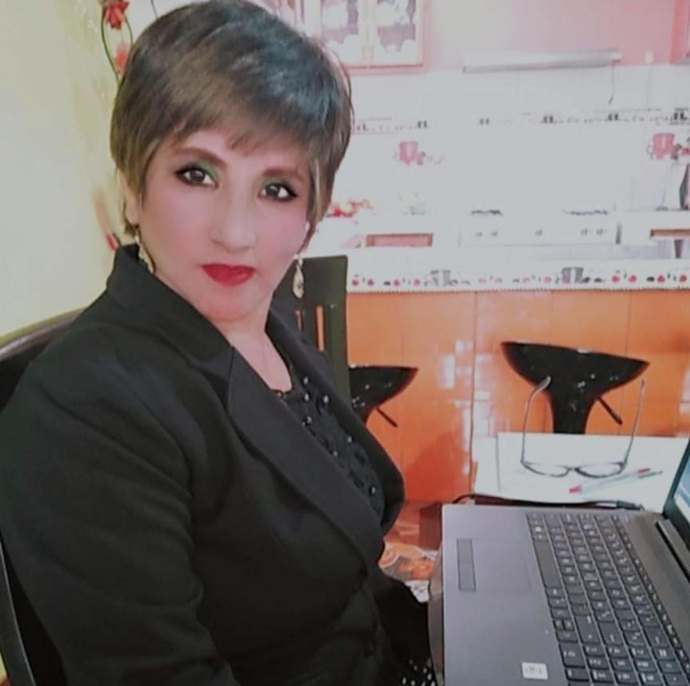

Fundamentos de Diseño Grafico

Mg./Lic./Téc. Vilma Gave Quintana
Indicadores de Logro
- Al culminar esta unidad didáctica el estudiante será capaz de:
- Identificar y discrimina las herramientas de diseño gráfico
- Identificar herramientas de diseño gráfico digital vectorial
- Diseñar y elaborar recursos gráficos de tipo vectorial productos gráficos rasterizados
- Discriminar y utilizar herramientas de diseño gráfico para elaborar los recursos gráficos en diversos formatos.